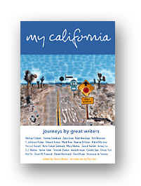
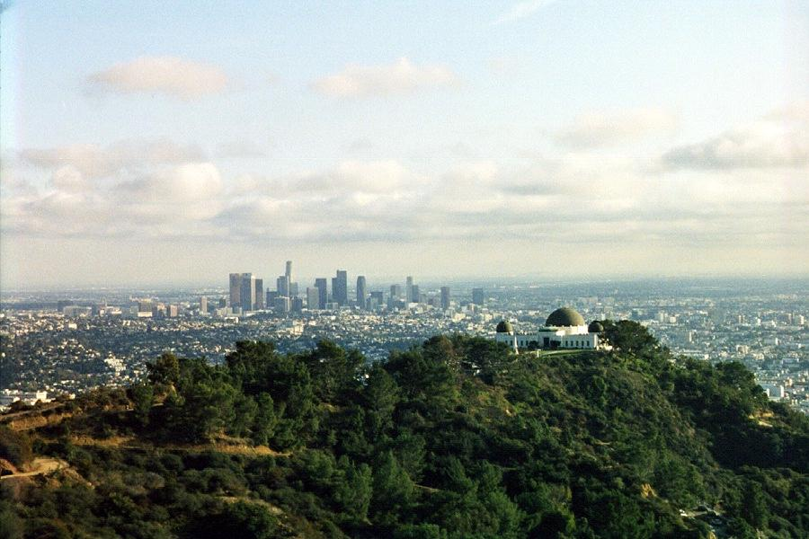

LBCC Special Activities
My California
Journeys by Great Authors

by
Michael Chabon, Aimee Liu (Contributor), T. Jefferson Parker (Contributor), Mary MacKey (Contributor), Hector Tobar (Contributor), Thomas Steinbeck (Contributor), Edward Humes (Contributor), Matt Warshaw (Contributor), Firoozeh Dumas (Contributor), Devorah Major (Contributor), Donna Wares (Editor), Mark Arax (Editor), et al. See more about contributors at: http://www.mycaliforniaproject.org/participants.shtml
Again
this year, the city of Long Beach has committed to reading
a book together as a community in the
Long
Beach Reads One Book
Program. The aim of this
program is to promote reading, literacy and fellowship
as the community joins in discussion of the book.
|
For
More Information about the book see:
My California Project.org
California Authors.com

|
|
|
Long Beach City College
Long Beach Public Library
LBPL Foundation
|
|
invite
you to join in reading
and discussion activities of the
Long Beach Reads One Book Program
Book Week March 2-18, 2006
LBCC Special Activities
|
Here’s how you can become involved now:
- Read and enjoy this insightful, delightful work
- Read it & donate your copy to the LBCC LIBRARY
- Read it & bring your thoughts, photos, or sketches
for A CALIFORNIA MINUTE — Video Diary Project .
Contact C.C. Sadler, x4255 or csadler@lbcc.edu
- Read it and join the anticipated book club meetings
- Instructors, read it & incorporate it into one of your
spring courses. (Book orders are due in October!)
- Instructors, encourage your students to read it and
submit a response for IMPRESSIONS—Choose Your Medium,
a creative response to My California for writers and artists of many media:
dance, photography, personal essays, poetry, family histories, sketches,
murals, oral interpretation — YOUR medium — to be displayed at the college
My California
is available for purchase
at the LBCC bookstore,
and to borrow from the LBCC Library
For more information, contact Jordan Fabish, x4919
or jfabish@lbcc.edu
|
|